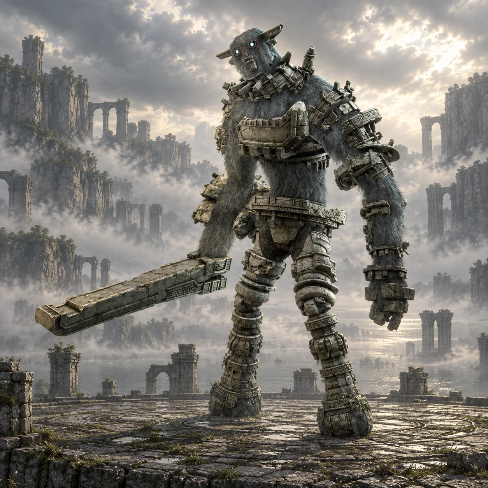

Dois nomes, duas origens
“Knight” é um nome de desenvolvimento. “Gaius” é o nome popular entre os fãs, não um nome próprio apresentado durante o jogo.

Colosso 03 · Terras Proibidas
Um cavaleiro entre a água e o céu.
No alto de uma plataforma isolada, Gaius desperta com uma espada de pedra. A arena circular oferece pouco espaço para esquecer o alcance do gigante.
Conheça o gigante01 / O gigante
Pernas longas, cintura estreita e uma cabeça protegida por pedra dão a Gaius uma aparência de guerreiro antigo. Uma enorme lâmina se estende de seu braço direito.
As proporções alongadas fazem o olhar subir da arena até o rosto do colosso. Seus golpes amplos impõem um ritmo: observar a preparação, reagir ao impacto e reconhecer a pausa seguinte.
*A medida indicada segue o guia Vandal, citado nas fontes. Os tamanhos variam entre fontes e escalas; esta é uma referência aproximada de altura, não uma medida oficial confirmada.
02 / O caminho
Cruze a ponte de pedra ao norte do santuário e siga pelo desvio a oeste, em direção ao lago cercado por montanhas.
Deixe Agro na margem. Nade até a rampa e percorra a subida curva, usando os apoios para alcançar a plataforma elevada onde Gaius repousa.
Abrir mapa das Terras Proibidas03 / Um olhar mais atento
“Knight” é um nome de desenvolvimento. “Gaius” é o nome popular entre os fãs, não um nome próprio apresentado durante o jogo.
Durante a subida, é possível observar estruturas que lembram engrenagens na parte inferior da plataforma circular.
Antes do encontro, Gaius permanece deitado. À distância, sua forma pode se confundir com um amontoado de rochas.
04 / O encontro
Algumas pistas para começar, deixando a descoberta da luta com você.
Dicas gerais para o modo Normal. A ficha não detalha todos os pontos vitais nem o desfecho do confronto.
Ficha baseada em registros da comunidade e guias de jogo. A arte é uma interpretação visual, não uma captura do jogo.